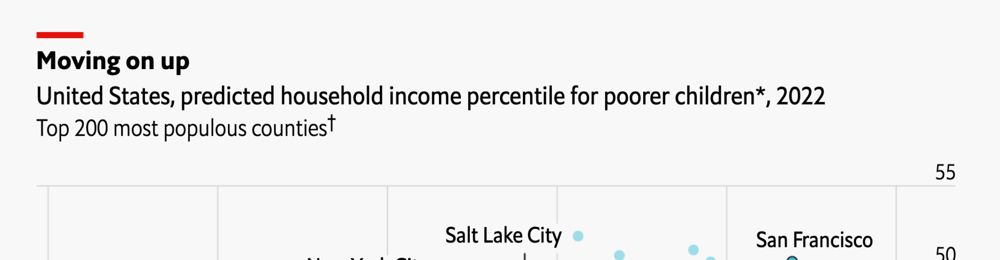
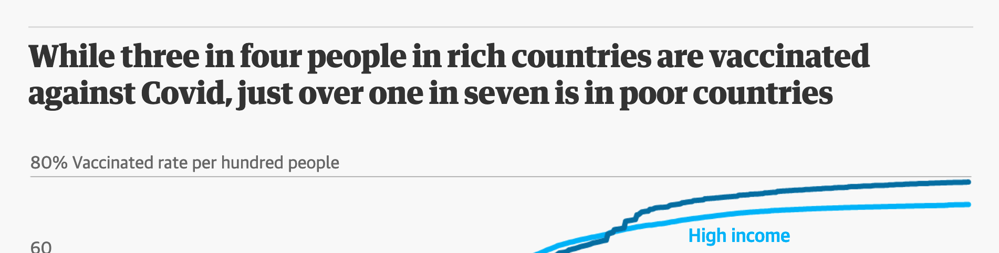

Schöner Visualisieren
Über mich

- Matthias Schnetzer
- Arbeiterkammer Wien & WU Vienna
- matthias.schnetzer@akwien.at
- https://mschnetzer.github.io
- matschnetzer
- Ich bin kein ausgebildeter Grafiker sondern Autodidakt.
- Eine Auswahl meiner Grafiken ist unter https://mschnetzer.github.io/portfolio/
Was sind eure Erwartungen?


Habt ihr spezielle Erwartungen oder Wünsche für diesen Workshop?
Die frühen Rockstars der Datenvisualisierung

William Playfair (1759-1823)

John Snow (1813-1858)


Charles Joseph Minard (1781-1870)

W.E.B. Du Bois (1868-1963)


Otto Neurath (1882-1945)

Die Gestalt-Prinzipien

Welche Grafik ist zufällig und welche besitzt Struktur?


Was sind die Gestalt-Prinzipien?
Die Gestalt-Prinzipien bieten einen psychologischen Ansatz dafür, wie das menschliche Gehirn visuelle Informationen wahrnimmt und ordnet, indem ähnliche Elemente gruppiert, Muster erkannt und komplexe Bilder vereinfacht werden.

Ein Gemälde erscheint und als Bild und nicht als einzelne Pinselstriche. Menschen greifen bei der Verarbeitung von Informationen auf Erfahrungen zurück.
Unser Gehirn sucht nach Struktur

Fünf Prinzipien für bessere Visualisierungen

1. Wähle eine adequate Darstellungsform
Nein:
OK:

OK:

- Wähle den Grafik-Typ anhand der abzubildenden Daten: Welches Skalenniveau haben die Daten?
- Was soll abgebildet werden: Vergleich, Verteilung, Zusammensetzung, Beziehung?
- Um den passenden Grafik-Typ aus einer Vielzahl unterschiedlicher Arten zu finden, helfen Hompages wie https://www.data-to-viz.com oder https://datavizproject.com
Ein einfacher Entscheidungsbaum von Darstellungsformen

Welches Chart beschreibt die Geschichte am besten?


2. Visualisiere die Daten sorgfältig und gewissenhaft
Nein: 
OK: 
- Lege Priorität auf Genauigkeit, Klarheit und Integrität
- Vermeide irreführende Praktiken wie Abschneiden von Achsen, Verwenden sekundärer Achsen, unlautere Auswahl von Daten, mangelnde Kontextualisierung, etc.
- Eine gute Datenvisualisierung verzichtet auf irreführende Manipulation der Daten oder von einzelnen Grafikelementen!
Beispiel


Noch ein Beispiel


Und noch ein drittes Beispiel


3. Integriere Text sinnvoll in die Grafik
Nein: 
OK: 
- Vermeide, dass Leser:innen ihren Kopf drehen müssen um die Bezeichnungen zu lesen
- Überlege eine logische Reihung der Grafik (alphabetisch, nach Werten, etc.)
- Direkte Bezeichnung ist besser als eine Legende
- Wähle sinnvolle Titel, die auf die Botschaft fokussieren
Musterbeispiel


4. Reduziere Ablenkungen
Nein: 
OK: 
- Unnötige visuelle Elemente lenken die Aufmerksamkeit weg von den wichtigen Daten
- Vermeide grafische Elemente, die keine Information transportieren
- Bestandteile wie etwa Achsen-Teilstriche oder Gitternetzlinien sollten entfernt oder zumindest reduziert werden
- Überlege sorgsam, welche visuellen Elemente wirklich nötig für das Lesen der Grafik sind
Musterbeispiel


5. Vermeide die Spaghetti-Grafik und starte in Grautönen
Nein:
OK:

OK:

- Wenn die Grafik zu viel Information transportiert, sieht sie aus wie Spaghetti
- Versuche überladene Grafiken in kleinere Bestandteile aufzuteilen (Facets, small multiples) oder hebe die relevante Information hervor
- Beginne mit Grautönen: das erfordert den strategischen Einsatz von Farben, Labels, etc.
Musterbeispiel


Sind irreführende Grafiken wirklich wirkungsvoll?

Irreführende Grafiken


Irreführende Grafiken


Irreführende Titel

Irreführende Grafiken erfüllen ihren Zweck

15 schnelle Tipps

Wenn möglich, direkte Labels statt Legende

Best practice

Text und Schriftarten






Quellen für Inspiration

Weiterführende Literatur
 |
Jonathan Schwabish Better Data Visualizations: A Guide for Scholars, Researchers, and Wonks Columbia University Press ISBN-13: 9780231193115 |
 |
David Spiegelhalter The Art of Statistics: Learning from Data Penguin Books UK ISBN-13: 9780241258767 |
Online Bücher
 |
Kieran Healy Data Visualization: A Practical Introduction Princeton University Press ISBN-13: 9780691181622 Link |
 |
Claus O. Wilke Fundamentals of Data Visualization: A Primer on Making Informative and Compelling Figures O’Reilly Media ISBN-13: 9781492031086 Link |
 |
Jack Dougherty and Ilya Ilyankou Hands-On Data Visualization: Interactive Storytelling from Spreadsheets to Code O’Reilly Media ISBN-13: 9781492086000 Link |